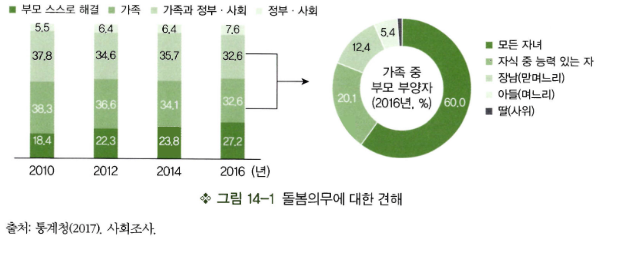
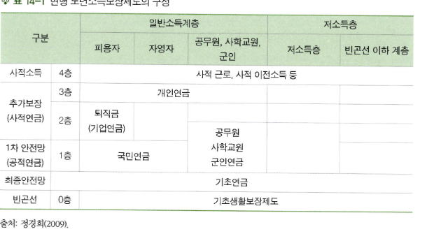
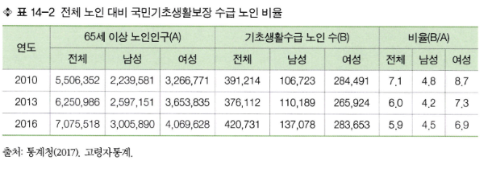
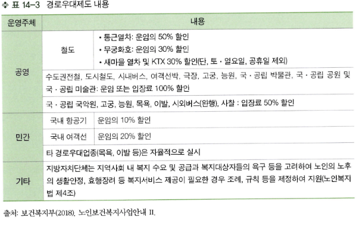
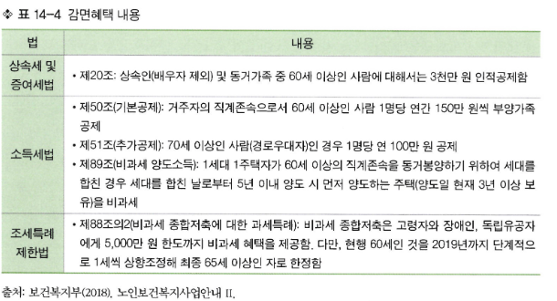
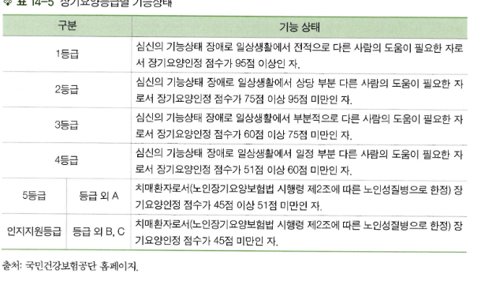
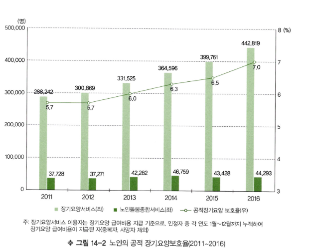
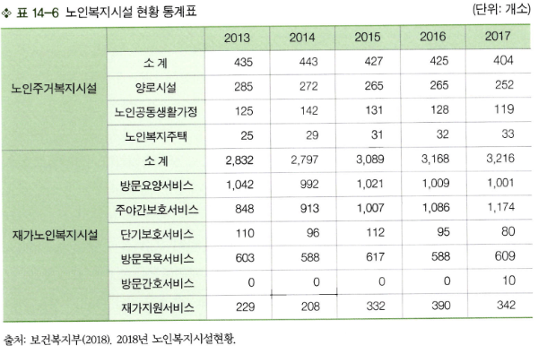
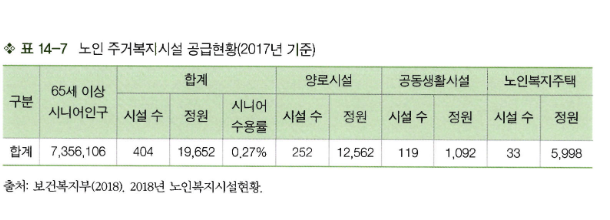

장 구성
1. 노인정책의 필요성과 현황 / 2. 소득 보장 / 3. 건강 보장 / 4. 주거 보장
도입: 노인돌봄과 정책의 질문
출처: 기획재정부(2018).
- 주거급여 제도, 10월부터 부양의무자 기준 폐지(취약계층, 사회적 약자)
- 저소득층 대상 평생교육 바우처 지원 실시(취약계층, 사회적 약자)
- 여성새로일하기센터 확대 운영(청년~중장년(19세~64세))
- 노인장기요양보험 본인일부부담금 감경 대상 확대(취약계층, 사회적 약자)
- 기초연금 2018년 9월부터 25만 원으로 인상 지급(어르신)
- 중증치매 독거노인 공공후견제도 시행(어르신)
- 고령 은퇴농업인 대상, 조합의 명예조합원 제도 도입으로 지원 확대(어르신)
한국 노인의 빈곤율은 34개 OECD 회원국 중에서 가장 높은 수치를 나타내며 국민연금과 기초연금 등을 포함해도 노인의 경제상태는 매우 불안정하다. 정부에서는 노인들의 삶의 질 향상을 위한 다양한 정책들을 시행하려고 한다. 과연 노인돌봄은 누구의 책임일까? 그리고 사회는 노인을 어떤 영역까지 돌볼 것인가?
1. 노인정책의 필요성과 현황
노인정책의 필요성
개인의 삶과 그 개인이 속해 있는 사회의 정책과의 연결은 어느 누구에게나 중요하지만, 특히 노인의 삶에 미치는 사회정책의 영향은 인생의 다른 어느 시기보다도 크다고 볼 수 있다. 사회구조와 정치적 이데올로기 등이 나라마다 차이가 있음에도 불구하고, 국가에서 운영하는 사회복지정책들은 대다수 노인의 삶에 중요한 소득원이 된다(Myles, 1989). 노인은 은퇴를 경험하면서 정기적인 수입이 단절되고 납세자의 역할보다는 사회보장정책의 혜택을 받는 집단으로 여겨진다. 물론 노인의 경제적 상태는 상대적으로 젊은 노동인구들과 비교할 때 좋다고 볼 수는 없고 소득을 얻을 수 있는 원천도 변화한다. 노인의 소득욕구를 산정하기 위해서는 생활양식의 연속성을 고려하여 은퇴 이전 소득대체 정도를 고려해야 하지만, 절대적 빈곤 수준에 있는 노인의 경우 의식주 문제를 해결하는 데 대한 우선적 배려를 고려해야 한다. 노년기 상대적 수입문제는 세 가지 요인으로 분류되는데, 1) 수입안정감의 결여, 즉 생활수준이 상황변화에도 불구하고 보호를 받는다는 느낌이 부족하고, 2) 배우자 사망이나 이혼과 같은 생애전이와 함께 일어나는 소득과 생활수준의 저하를 경험하며, 3) 젠더나 인종 등에 따라 인생주기 동안 적절한 은퇴소득을 가져오는 일자리에 접할 기회를 얻지 못한 결과가 노년에도 지속되는 것을 의미한다. 예를 들어 여성들은 남성들과 직업세계에서 경쟁하면서 승진이나 포상 등에 상대적으로 불이익을 당하고, 이는 연봉차이와 더불어 은퇴 이후 연금에서의 차이도 불러일으킨다.
전반적으로 절대적인 수입문제보다 상대적인 수입문제는 사회적으로 덜 심각하게 여겨지는데, 사회정책은 이 둘 다에 접근해야만 한다. 모든 연령층과 소득수준 계층의 개인은 자신의 소득 안전에 위협을 경험할 수 있지만, 노인은 특히 취약할 수 있으므로 노인은 국가 연금 체계, 사회 안전보장에 다수가 의존한다. 특히 건강이 악화되고 경제적 능력이 부족하여 열악한 주거환경에 있는 노인에게는 돌봄이 요구된다. 유교문화권인 한국에서는 과거에 가족이 노인돌봄의 책임을 지고 장남과 큰며느리가 노인돌봄을 제공하는 것이 당연하다고 여겨졌다. 그러나 산업화와 더불어 도시화로 인해 젊은 세대와 노인세대의 물리적 거리가 멀어지고 여성의 사회진출과 노부모와 자녀의 동거가 각자의 욕구수준에 따라 선택이 된 현대사회에서는 노인돌봄의 문제가 더 이상 가족만의 책임이 아니게 되었다. 노인의 돌봄 및 자녀와 동거의식은 과거와 비교하여 ‘스스로 해결해야 한다’는 비율이 2010년 18.4%에서 2016년 27.2%로 계속적으로 증가하고 있다([그림 14-1] 참조). 2016년 65세 이상 노인은 부모의 노후를 ‘가족과 정부•사회’, ‘가족’이 책임져야 한다고 생각하는 사람이 각각 32.6%로 높고, 그 다음은 ‘부모 스스로 해결’해야 한다고 생각하는 사람이 27.2%이다. 가족이 전적으로 부양해야 한다는 비중은 계속적으로 감소하고 있다.
가족 중에서 부양해야 한다면 ‘모든 자녀’가 부모를 부양해야 한다는 견해가 60.0%로 가장 많았고 다음으로는 ‘자식 중 능력 있는 자’가 부양해야 한다는 비중이 늘어났다. ‘장남이나 아들이 부양해야 한다’는 견해는 지속적으로 감소하고 있는 추세여서 노인의 사회적 돌봄에 대한 요구가 증가하고 있고, 그에 따라 노인관련 정책들도 계속해서 변화하고 있다 는 것을 알 수 있다.
출처: 통계청(2017). 사회조사.
그림 14-1 돌봄의무에 대한 견해

한국의 노인관련 정책
한국의 노인관련 정책은 그 기원을 삼국시대의 양로연이나 고려시대의 시정, 조선시대의 양민원 등에서 그 기원을 찾을 수 있지만, 현대적 의미의 노인관련 정책들은 1960년대와 70년대 노인복지법 제정 이전의 연금제도나 의료보호제도 등에서 시작되었다고 볼 수있다. 1981년 노인복지법이 제정되면서 요보호노인을 주 대상으로 다양한 정책들이 수립되었고, 1990년대에 노인복지법의 개정을 통해 2000년대부터 재가복지, 고령친화산업, 기초연금, 노인고용정책 등 다양한 노인관련 정책들이 실시되기 시작하였으며 현재도 계속해서 변화 중이다. 노인에 대한 정책은 노인의 욕구를 충족시키면서 공공부문과 사적 영역에서의 책임구분에 대한 사회의 결정이다. 따라서 노인정책은 노인이 어떤 기준으로 혜택을 받고 정책마다 어떤 재원을 사용하는지 등에 대해 명확한 구분을 한다. 노인정책은 자격과 혜택의유형, 재원방식 등을 기준으로 구분한다. 예를 들면, 국민연금 중 노령연금처럼 연령을 자격기준으로 하거나 국민기초생활 수급과 같은 요구자격을 기준으로 구분할 수 있다. 또는 기초연금처럼 노인이 직접 수령하는 직접적 소득보장제도와 경로우대제도나 세제감면과 같은 간접적 소득보장제도처럼 혜택의 유형별로 구분할 수 있다. 그리고 국민연금처럼가입자의 기여금과 사용자의 부담액을 토대로 운영되는 사회보험형식의 프로그램과 국민기초생활 수급비와 같이 비기여적 재원으로 운영하는 공적부조 등 재원방식을 기준으로구분할 수 있다.
다음에서는 노인의 의식주 등 기본적인 욕구를 충족시키는 정책 중에서 노년기 빈곤과 건강문제 등에 대한 대책인 소득보장정책, 건강보장정책, 주거보장정책을 자격과 혜택의 유형, 그리고 재원방식 등을 중심으로 살펴보고자 한다.
2. 소득 보장
노년기는 은퇴 이후 정기적 소득이 감소하고 신체적 쇠약으로 인한 의료비 지출의 증가 등으로 인해 경제적 자원이 줄어드는 시기이다. 따라서 노인의 빈곤에 대한 사회적 대책으로 노년기 경제생활에 대한 최소한의 안전망이 요구된다. 한국 노인의 경제상황을 살펴보면 60세 이상 노인이 경험하는 생활상의 어려움에서 경제적 어려움이 차지하는 비율이 매우 높게 나타나며(통계청, 2017), 도시지역의 노인과 여자노인이 상대적으로 더 어려움을 많이 느끼는 것으로 나타났다. 우리나라 전체의 빈곤율은 2016년 14.7%인데 65세 이상 노인의 상대적 빈곤율은 46.5%로 나타나 노인의 다수가 소득빈곤상태에 있는 것을 알 수 있다(통계청, 2017). 현재 노인소득보장정책은 빈곤선 이하의 노인에게 국민기초생활 수급비를 지급하고 저소득 70%에 해당하는 노인에게 기초연금을 지급하는 최종안전망을 기반으로 한다(<표 14-1> 참조). 다음으로 공적연금을 1차 안전망으로 하고 그 다음 안전체계로 사적연금과 같은 추가보장과 사적소득, 사적 이전소득까지 추가적인 2, 3, 4층의 구조를 보인다(정경희, 2009). 공적 연금제도는 국민연금과 특수직연금으로 구분되며 특수직으로는 공무원, 사학교원,군인 등이 포함된다.
국민연금의 경우, 도입 이후 아직 성숙하지 못해서 효과성이 충분히 발휘되지 않아 현재 노인의 대다수가 연금수급권을 확보하지 못하였고, 이에 사각지대에 있는 노인세대에게 국가적 사회적 소득보장을 위해 2008년 기초노령연금이 도입되었고 2015년부터 기초연금으로 전환되어 실행되고 있다(양옥남 외, 2016).
표 14-1 현행 노년소득보장제도의 구성

일반소득계층 저소득층
구분
피용자 자영자
공무원, 사학교원,
군인 저소득층 빈곤선이하계층
사적소득 4 층 사적 근로, 사적 이전소득 등
추가보장
(사적 연금)
3층 개인연금
2 층
퇴직금
(기업연금) 공무원
1차 안전망
(공적 연금) 1 층 국민연금
사학교원
군인연금
최종안전망 기초연금
빈곤선 0 층 기초생활보장제도출처: 정경희(2009).
공공부조
법에서 정한 일정 자격기준을 조사하여 국가의 세금으로 재원을 충당하는 공공부조는 해당 대상자의 최저 생활수준을 보장하는 제도이다. 국민기초생활보장제도는 소득평가액과 재산의 소득환산액을 합산한 소득인정액이 일정 기준 이하인 자를 대상으로 한다. 기초연금은 경로연금, 기초노령연금을 거쳐 기초연금으로 전환되었는데, 만 65세 이상의노인으로 가구의 소득인정액이 선정기준 이하(소득하위 70%)인 자를 대상으로 한다.
국민기초생활보장제도
국민 기초생활보장제도는 1961년 도입되어 시행되어 온 생활보호제도를 대체하여 2000년부터 시행하고 있는 공공부조이다. 이후 경제성장과 여러 복지제도의 시행과 더불어복지수요가 다양화되면서 2013년 각 급여대상별 특성에 맞게 상대적 빈곤관점을 반영하여 생계, 의료, 주거, 교육 등의 영역을 구분하여 급여별 최저보장수준을 현실화하고자‘기초생활보장제도 맞춤형 급여체계’로 개편하고자 노력하였다. 이는 부양의무자 기준을완화하여 사회보장을 강화하고, 급여별로 수급자 선정기준을 다층화해서 필요한 급여를계속 지원하도록 하며 최종적으로는 자립을 하도록 하는 것을 목적으로 한다. 기존의 제도는 모든 급여를 일괄 지원하는 통합급여방식이었는데, 이는 일정수준 이상의 소득이생기면 급여가 중단되어 자립자활에 대한 유인이 부족한 문제가 있었다. 이를 개별급여방식으로 개편하고 대상자 선정 및 급여수준을 별도 설정하여 개별급여를 통해 근로능력자의 자활을 유도하고자 하였다(보건복지부). 수급대상자의 자격요건은 소득인정액이 최저생계비 이하이고 부양의무자•가 없거나, 있어도 부양능력이 없거나 부양을 할 수 없는 자이어야 한다. 이 제도는 노인만을 대상으로 하는 것이 아니라 전체 국민 가운데 저소득층 가구를 대상으로 하는데, 노인의 빈곤율이 높다는 것을 감안하면 주요한 노인소득보장정책 중의 하나로 여겨진다.
한편, 국민기초생활보장제도의 수급자 중 노인인구 비율은 높지만, 빈곤노인가구 중 기초생활보장제도의 혜택을 받는 가구는 부양의무자의 부양능력 판정기준 때문에 노인가구의 탈락가능성이 매우 높았다. 국민기초생활보장제도 수급에서 제외된 노인은 인구학적 특성과 소득특성이 수급자 집단과 유사하여 공공부조 수급의 욕구가 큰데도 수급에서 제외된 것으로 나타나(최희경, 2004) 이에 대한 대책으로, 보건복지부에서 2017년 11월부터 기초생활수급신청과 부양의무자 가구 모두에 만 65세 이상의 노인이나 장애인 등급 1~3등급의중증 장애인이 있는 경우 부양의무자 기준을 폐지하고 생계, 의료, 주거급여 수급자로 지원을 하고 있다. 실제로 빈곤층인 국민기초생활보장 대상자 중 노인비율은 상당히 높은데 2016년 기준으로 전체수급자의 27.3%가 65세 이상 노인으로 나타나 노인의 빈곤문제가 심각함을 알 수 있다. 또한 여성노인과 남성노인의 수급률은 6.9%대 4.5%로 여성노인의 빈곤문제가 더 심각한 것으로 나타났다(<표 14-2> 참조).
표 14-2 전체 노인 대비 국민기초생활보장 수급 노인 비율

연도
65세 이상 노인인구(A) 기초생활수급 노인 수(B) 비율(B/A)
전체 남성 여성 전체 남성 여성 전체 남성 여성
2010 5,506,352 2,239,581 i 3,266,771 391,214 106,723 284,491 7.1 4.8 87
2013 6,250,986 2,597,151 3,653,835 376,112 110,189 265,924 60 4.2 7.3
2016 7,075,518 3,005,890 4,069,628 420,731 137,078 283,653 5.9 4.5 6.9출처: 통계청(2017). 고령자통계.
기초연금
기초연금은 1991년 시행된 노령수당제도가 1998년 경로연금으로 명칭이 변경되어 국민기초생활보호수급자와 저소득층 노인에게 지급되었고, 2007년 경로연금이 폐지되어 기초노령연금으로 65세 이상 노인 중 정부가 정한 소득인정액 이하의 노인에게 지급하다가,2014년 기초연금으로 지급되고 있다. 이는 현재 노인세대들 중 국민연금 가입기회를 갖지못했거나 가입기간이 짧아 연금의 혜택을 받지 못하는 저소득 노인을 위한 공적연금의보완적인 연금제도로 국민연금제도의 성숙까지 한시적으로 도입된 공공부조식 지원 체제이다(박선태 외, 2016). 기초연금의 대상자는 만 65세 이상의 대한민국 국적이어야 하며, 가구의 소득인정액이 하위 70%이다. 기초연금액은 기준연금액과 국민연금 급여액 등을 고려하여 산정한다. 2018년 선정기준액은 월소득평가액과 재산의 월소득환산액을 합산한 금액이 노인단독가구 1,310,000원, 노인부부가구 2,098,000원이다. 대상자는 1) 직역(공무원•사립학교교직원. 군인.별정우체국직원) 재직기간이 10년 미만인 국민연금과 연계한 연계퇴직연금 또는 연계퇴직유족연금 수급권자 및 그 배우자, 2) 장해보상금, 유족연금일시금, 유족일시금(유족연금 대신 받은 경우)을 받은 이후 5년이 경과한 수급권자 및 그 배우자, 3) 2014년 6월 30일당시 기초노령연금을 받고 계신 분, 4) 기초연금법 시행 당시 장애인연금 특례수급자였던자가 나중에 만 65세에 도달하여 기초연금 특례대상자로 전환된 경우가 해당된다(보건복지부).
사회보험
사회보험이란 국가가 정책을 수행하기 위해 보험의 원리를 도입하여 만든 제도로, 보험료를 국민들로부터 강제적으로 징수하고 정형화된 보험금 지급을 특징으로 한다. 우리나라에서 사회보험 형식으로 운영되는 사회보장은 공적연금, 국민건강보험, 산재보험, 고용(실업)보험, 노인장기요양보험의 다섯 가지인데, 각 제도의 성격에 따라 가입 대상이나 보험료 부과방식, 급여방식, 재원조달 방식 등에서 다소 차이가 있지만, 사회공동의 책임을강조하는 사회연대성을 원칙으로 하고 일정 조건에 해당되는 사람들은 의무적으로 가입하여 소득 등의 수준에 따라 보험료가 차등적으로 부과되는 특성을 갖는다. 우리나라의 공적 연금은 사회보험형식으로 운영되는데 가입자는 소득수준에 따라 기여금을 납부하고 정부 또는 사용자는 그 보험료에 상응하는 부담금을 납부하여 노령, 장애,사망 등의 경제적 어려움이 발생할 시, 피보험자의 기여를 기준으로 급여를 지급하는 것이다(권중돈, 2013). 사회보험으로 운영되는 공적연금은 국민연금과 특수직연금(공무원연금,군인연금, 사립학교교직원연금)이 있다.
국민연금
국민연금은 1988년 10인 이상 사업장 상시근로자를 대상으로 시행되다가 사업장 범위를 확대하고 농어촌지역도 연금을 적용하여 1999년 전 국민에게 적용되었다. 국민연금은‘모든 경제활동 계층을 대상으로 하여 가입자가 노령, 장애, 사망 등의 사회적 위험에 처해 소득이 감소되거나 상실되는 경우 본인이나 유족에게 경제적으로 안정적인 생활을 보장할 수 있도록 연금형태의 급여를 제공함’으로 노년기 소득보장과 빈곤예방을 위한 제도이다(박선태 외, 2016). 국내에 거주하는 18세 이상 60세 미만의 사용자 또는 근로자와 국내에 거주하는 외국인이나 국민연금 가입 사업장에 고용된 외국인도 가입대상이다. 연금의 급여종류는 10년 이상 가입자가 60세 도달 시에 지급하는 노령연금, 가입 중 발생한 사고나 질병으로 인하여 신체 또는 정신의 장애가 발생하였을 때 지급하는 장애연금, 가입중인 자 또는 10년 이상 가입자 사망 시 지급하는 유족연금, 그리고 혼인기간 5년 이상의 배우자가 국민연금 수급권자일 경우 배우자의 노령연금 중 혼인기간의 연금액을 나누어 지급하는 분할연금이 있다. 또한 10년 미만 가입자가 자격을 상실할 경우 지급하는 반환일시금이 있다(국민연금관리공단). 가입자의 유형은 사업장가입자, 지역가입자, 임의가입자, 임의계속가입자로 구분되며,사업장가입자는 가입자와 사용자가 각각 기준소득월액의 4.5%씩 납부하고 다른 유형의가입자는 본인이 9%를 납부한다.
가입자는 사업장가입자가 가장 많고, 급여별로는 노령연금 수급자가 많으며, 금액별로는 10만 원에서 25만 원을 받는 수급자가 가장 많은 것으로 나타났다(통계청, 2017). 가입기간이 10년 이상 20년 미만이며 60세인 경우는 감액된 노령연금을, 가입기간 20년 이상이고 60세 이상인 경우는 완전노령연금을 수령하게 된다. 가입기간이 10년 이상이지만 연령이 55세에서 60세이면 조기노령연금을 수령할 수 있다 (국민연금관리공단).
특수직연금
국민연금 이외에 특수직연금으로는 공무원연금, 사립학교교직원연금, 군인연금 등이 있다. 공무원연금제도는 1960년 공무원연금법이 제정되면서 실시되었다. 공무원연금제도는공무원이 퇴직, 사망, 근무 중 부상이나 질병 등으로 경제적 어려움에 처할 때 기준에 따라 급여를 제공하는 것으로 장기급여와 단기급여로 구분된다. 장기급여는 퇴직급여, 유족급여, 장해급여, 퇴직수당 등이 있고 단기급여로는 요양급여와 부조급여 등이 있다. 사립 학교교직원연금은 1973년 사립학교교원연금법이 제정되고 1975년부터 시행되었다. 연금은 교육부장관의 위탁을 받아 사립학교 교직원연금관리 공단에서 운영한다. 사립학교교직원의 퇴직, 사망 및 근무 중 부상이나 질병을 당한 경우 지급하는 것으로 단기급여와장기급여로 구분된다. 군인연금은 1963년 군인연금법을 제정하여 시행하였다. 이 연금제도의 운영주체는 국방부장관이며 국방부 인사복지 실 보건복지관실 군인연금과에서 실무를 담당하고 있다.
기타 간접 소득보장제도
경로우대제도와 세제감면제도 등은 노인에게 직접 현금을 지원하지는 않지만 노인의 지출을 경감하여 소득을 보전하는 제도이다. 노인복지법 제 26조에 의하면, ① 국가 또는 지방자치단체는 65세 이상의 자에 대하여 대통령령이 정하는 바에 의하여 국가 또는 지방자치단체의 수송시설 및 고궁•능원 ■박물관•공원 등의 공공시설을 무료로 또는 그 이용요금을 할인하여 이용하게 할 수 있다. © 국가 또는 지방자치단체는 노인의 일상생활에 관련된 사업을 경영하는 자에게 65세 이상의 자에 대하여 그 이용요금을 할인하여 주도록 권유할 수 있다. @ 국가 또는 지방자치단체는 제2항의 규정에 의하여 노인에게 이용요금을 할인하여 주는 자에 대하여 적절한 지원을 할 수 있다고 규정한다. 노인복지법에 의해 65세 이상의 노인에게 철도나 국공립 박물관이나 공원 등의 공공영역과 국내 항공기와 여객선 등의 민간영역에서 경로우대제도를 시행하고 있다(<표 14-3> 참조).
표 14-3 경로우대제도내용

운영주체 내용
•통근열차: 운임의 50% 할인
철도•무궁화호: 운임의 30% 할인
•새마을 열차 및 KTX 30% 할인(단, 토•일요일, 공휴일 제외)
수도권전철, 도시철도, 시내버스, 여객선박, 극장, 고궁, 능원, 국 - 공립 박물관, 국•공립 공원 및
서 국•공립 미술관: 운임 또는 입장료 100% 할인
|^ 공립 국악원, 고궁, 능원, 목욕, 이발, 시외버스(완행), 사찰 : 입장료 50% 할인
국내 항공기 운임의 10% 할인
민간 국내 여객선 운임의 20% 할인 _______________________________________________________
타 경로우대업종(목욕, 이발 등)은 자율적으로 실시
— 지방자치단체는 지역사회 내 복지 수요 및 공급과 복지대상자들의 욕구 등을 고려하여 노인의 노후
기타 노인의 생활안정, 효행장려 등 복지서비스 제공이 필요한 경우 조례, 규칙 등을 제정하여 지원(노인복지
법 제4조)출처 보건복지부 (2018). 노인보건복지 사업 안내 IL 또한 노인과 60세 이상 노부모를 동거부양하거나 동거하지 않더라도 부양을 입증하는자녀들에게 상속세 공제, 소득세 공제, 양도소득세 면제 등의 세제감면혜택을 시행하고 있다(<표 14-4> 참조).
표 14-4 감면혜택 내용

법 내용
상속세법 후 제20조 상속인(배우자 제외) 및 동거가족 중 60세 이상인 사람에 대해서는 3천만 원 인적공제함
•제50조(기본공제): 거주자의 직계존속으로서 60세 이상인 사람 1 명당 연간 150만 원씩 부양가족
공제
소득세법 * 제51 조(추가공제): 70세 이상인 사람(경로우대자)인 경우 1 명당 연 100만 원 공제
양도소득세법•제89조(비과세 양도소득): 1 세대 1 주택자가 60세 이상의 직계존속을 동거봉양하기 위하여 세대를
합친 경우 세대를 합친 날로부터 5년 이내 양도 시 먼저 양도하는 주택(양도일 현재 3년 이상 보
___________ 유)을비과세
즈 * 제88조의2(비과세 종합저축에 대한 과세특례): 비과세 종합저축은 고령자와 장애인, 독립유공자
소세 =〒머
T」I=L어 에게 5,000만 원 한도까지 비과세 혜택을 제공함. 다만, 현행 60세인 것을 2019년까지 단계적으
제안법
로 1 세씩 상향조정해 최종 65세 이상인 자로 한정함출처 : 보건복지부(2018). 노인보건복지사업 안내 II.
3. 건강 보장
노년기에는 다른 어느 시기보다 건강 문제, 특히 만성질환이 발생할 위험이 높아 의료비 부담이 클 뿐 아니라, 일상생활에서의 돌봄, 간병 요구가 증가하기 때문에 가족의 부담 또한 높아질 수 있다. 이러한 점에서 노년기 건강 보장은 이들의 의료적 필요에 적절히 대응하고, 악화된 건강상태로 인해 발생될 수 있는 돌봄문제 또한 포함할 수 있어야 한다. 노인을 위한 건강보장정책은 사회보험 형식으로 운영되는 국민건강보험과 노인장기요양보험, 저소득층을 위한 공공부조인 의료급여, 그리고 노인의 건강증진을 위한 다양한 사회서비스들이 포함된다. 이 절에서는 우리나라 건강보장정책의 근간이 되는 국민건강보험과 노인장기요양보험을 중심으로 살펴볼 것이며, 이들 제도들을 살펴보면서 각 제도에 의해 제공되는 보장에 상응되는 의료급여(공공부조)에 대해서도 함께 설명할 것이다.
국민건강보험
현재 우리나라 건강보장정책의 기본을 이루고 있는 것은 국민건강보험제도이다. 국민건강보험은 ‘생활상의 질병•부상에 대한 예방•진단•치료•재활과 출산•사망 및 건강증진에 대하여 보험급여를 실시함으로써 국민보건을 향상시키고 사회보장을 증진함으로써 보험의 원리를 이용하여 의료비의 지출부담을 국민건강보험 가입자 모두에게 분산시켜 국민생활의 안정을 도모하기 위한 사회보험’이다(보건복지부). 앞서 살펴보았던 국민연금과동일하게 사회보험 방식으로 운영되지만, 연금제도의 경우 나중에 받게 되는 급여액은 가입자 자신이 낸 연금액에 비례하지만(그러나 완전히 비례하는 것은 아니어서, 소득재분배 원칙에 따라 소득수준이 낮은 사람의 경우 자신의 기여에 비해서는 상대적으로 많은 연금을 받을 수 있도록 설계되었다), 건강보험은 보험료 부담수준과 관계없이 균등하게 필요에 따라 급여가 지급된다. 국민건강보험은 의료보험을 전신으로 하는데, 제도 시행 초기에는 가입 대상의 범위(특히 강제 적용되는 당연적용 대상자)가 대기업, 공무원, 사립학교 교직원 등으로 매우 제한적이었지만, 적용대상이 확대되고 지역의료보험이 실시되면서 전 국민을 대상으로 하는 의료보험제도(저소득층의 경우 의료보호)가 확충되었다.
건강보험제도의 주요 발달
- 1963년 의료보험법 제정(300인 이상 사업장 임의적용 근거마련)
- 1977년 500인 이상 사업장근로자 당연적용, 생활보호대상자에 대한 의료보호 실시
- 1979년 공무원 및 사립학교교직원 당연 적용
- 1988, 1989년 농 - 어촌지역의료보험과 도시지역의료보험(전 국민 의료보험 실시)
- 2000년 직장, 공무원 및 사립학교교원, 지역의료보험을 ‘국민건강보험’으로 통합
적용 대상(coverage)과 급여 내용(benefits)
국민건강보험과 의료급여를 통해 전 국민이 일정 수준의 의료보장을 받게 되는데, 공공부조인 의료급여 대상자를 제외한 모든 국민이 건강보험 가입자로서 보험료를 납부하는 것은 아니다. 개인을 단위로 하여 설계, 운영되는 공적연금1)과 달리, 건강보험은 피부양자에게도 급여가 제공된다. 피부양자는 보험가입자에게 생계를 의존하는 배우자, 부모,자녀 등으로 재산과 소득이 일정 기준 이하인 사람이 여기에 해당된다. 1) 공적연금도 유족연금이나 분할연금(이혼한 배우자가 연금의 일정 부분을 받는 것)처럼 보험가입자의 배우자를 포함한 가족이 연금을 받을 수 있지만, 기본적으로 제도에 가입한 개인이 연금의 수급대상이 된다. 건강보험에 의해 적용되는 급여는 현물급여와 현금급여의 두 가지 형태가 있다. 현물급여는 의료 그 자체를 보장하는 것으로 요양급여(진찰•검사, 약제•치료재료 지급, 처치•수술•기타 치료, 예방재활, 입원, 간호, 이송이 포함됨)와 건강검진이 포함되며, 현금급여는 요양비, 장애인보장구 급여비, 본인부담상한액, 임신 및 출산진료비 등 현금으로 지급되는것이다. 건강보험의 경우 입원이나 외래진찰, 약국 등을 이용할 때 비용의 일정 부분을 환자 자신이 부담하도록 하고 있는데 이를 본인부담금이라고 한다. 건강보험의 적용을 받는 사람들은 각 급여를 이용할 때 일정 금액 혹은 비용의 일정 비율을 본인부담금으로지불하고 나머지는 건강보험 재정에서 지불된다.
본인부담금은 이용하는 의료서비스의 유형 등에 따라 차이가 있으며, 환자가 부담한 본인부담액이 연도별 상한액 기준을 초과하는 경우 초과분을 환급해주는 본인부담상한제가 있다. 본인부담상한액은 소득수준에 따라 차등 적용된다.
재원조달
국민건강보험의 재정은 납부의무자들의 보험료와 국가의 보조금으로 충당되는데 국가의 보조금은 주로 공단 운영비를 충당하는 정도이므로 거의 대부분의 비용은 보험료로충당된다(최성재, 2012). 보험료는 납부의무자로부터 징수하는데, 직장가입자와 지역가입자가 다소 상이하다. 직장가입자 기본적으로 보수월액에 보험료율을 곱하여 보험료를 산정하고, 여기에보험료 경감이나 면제 등의 사유를 고려하여 최종 보험료를 산출하는 보수월액보험료가부과되며, 보험가입자 개인과 사용자(직장)가 보험료를 절반씩 나누어 부담한다. 보수월액이란 동일사업장에서 지급받은 금액을 의미하는데, 보수 이외의 소득이 일정기준 이상인경우에는 소득월액보험료가 추가로 부과된다. 보수월액보험료를 산정할 때 적용되는 보험료율 및 소득월액보험료가 부가되는 보수 외 소득기준은 주기적으로 변경된다. 지역가입자 소득과 재산, 자동차 등에 대해 점수를 부과하여, 총부과점수에 점수당금액을 곱하여 보험료를 산정한 후, 보험료 경감이나 면제 등의 사유를 고려하여 최종 보험료를 산출한다. 보험료산출을 위해 고려되는 점수부과 요소에는 사업•이자•배당•연금•기타•근로소득 등의 소득과 토지, 주택, 건축물, 선박, 항공기, 전/월세 등의 재산, 그리고 자동차가 포함된다. 세대 단위로 부과되며, 가입자와 사용자(직장)가 보험료를 분담하는 직장가입자와 달리, 지역가입자는 가입자 본인이나 가족이 전액 부담한다. 지역가입자의 보험료를 산출하는 데 적용되는 점수당 금액 역시 주기적으로 변경된다.
※ 참고: 2018년 7월 1 일 기준
- 직장가입자의 보수월액보험료 산출시 적용되는 보험료율: 6.24% (보험가입자3.12% + 사용자(직장)3.12%)
소득월액보험료가 부가되는 보수 외 소득은 연간 3,400만 원 이상임
- 지역가입자의 보험료 산출에 적용되는 부과점수 당 금액은 183.3원(점)임
출처: 국민건강보험 홈페이지(http://www.nhis.or.kr).
공공부조: 의료급여
국민건강보험이 일정한 자격요건을 갖춘 사람들이 의무적으로 가입해야 하는 사회보험 형식이라면, 저소득층에 대한 공공부조로 제공되는 건강보장은 의료급여제도이다. 의료급여는 ‘생활유지 능력이 없거나 생활이 어려운 저소득 국민의 의료문제를 국가가 보장하는 공공부조로 건강보험과 함께 국민 의료보장의 중요한 수단이 되는 사회보장제도’이다. 원래 기초생활보장제도에 생계급여, 의료급여, 주거급여, 교육급여가 포함되어 있었으나, 2014년 12월에 국민기초생활보장법 개정안이 국회를 통과하면서 각 급여들이 별도의선정기준과 급여수준을 갖는 제도로 분리되었다. 개정안은 의료급여의 소득기준은 기존의 최저생계비 방식에서 상대 기준선 방식으로 개편하고(의료급여는 중위소득의 40% 이상으로 명시) 부양의무자 기준은 부양능력을 중위소득 이상으로 상향 조정하는 것을 골자로 한다(노대명, 2015). 의료급여 수급 대상의 경우 국민기초생활보장법에 따른 수급자 외에도「재해구호법」에따라 인정되는 이재민, 의사상자,「입양특례법」에 따라 국내에 입양된 18세 미만의 아동,국가무형문화재 보유자 등도 일부 포함되며, 2016년 기준 전체 인구의 2.9%가 이에 해당된다. 의료급여의 재원은 국고보조금(80%)과 지방자치단체의 출연금(20%)으로 구성되며,여기에 의료급여 대상자들이 의료서비스 이용 시 부담하게 되는 본인부담금이 일부 포함된다.
본인부담은 1종 수급자는 이용하는 의료기관의 유형에 따라 무료에서 2,500원 정도이며(CT, MRI, PET 등의 특수장비촬영은 총액의 5%), 2종 수급자 역시 이용하는 의료기관의 유형에 따라 무료에서 비용의 15%까지 부담하게 된다. 의료급여 대상자들은 본인부담보상금제도 혹은 본인부담금상한제가 적용되어, 본인부담금이 특정 금액을 초과하는 경우 초과금액의 50%(본인부담보상금) 혹은 초과금액 전액(본인부담금상한제)을 돌려받게 된다.
읽을거리: 국민건강보험에 대한 평가
국민건강보험(의료급여 포함)에 대한 평가를 보장성, 지속가능성, 형평성의 세 가지 이슈와 관련하여 간단히 살펴보고자 한다.
보장성
제도가 국민의 의료적 필요에 대해 얼마나 충분히 보장하고 있는가의 문제로, 세계보건기구(WHO)에서 보편적 의료보장(Universal Health Coverage)의 3가지 차원으로 간주하는 대상인구, 급여서비스 범위, 그리고 비용부담수준을 모두 포괄하는 접근이 필요하다(강희정, 2017). 대상인구라는 측면에서 보면, 우리나라는 전 국민이 건강보험(의료급여 포함)의 가입자 혹은 가입자의 피부양자가 되는 보편적 제도로 기능하고 있다. 그러나 급여서비스 범위나 비용부담수준의 측면에서 보면 보장성이 충분하지 못하다는 비판들이 제기되어 왔다. 충분한 보장성을 갖기 위해서는 의학적으로 필요한 의료 행위•서비스의 대부분이 보험 급여항목으로 포함되고 본인부담금 수준도 높지 않아야 한다. 치료목적으로 사용된 전체 의료비 중 건강보험에서 부담하는 건강보험 보장률(National health insurance coverage)은 2016년 기준 62.6%이다(건강보험정책연구원, 2018). 나머지 37.4%는 본인부담금 혹은 비급여항목으로 가계가 직접 부담한 것인데, 2014년의 경제협력개발기구(OECD)의 가계직접부담 의료비 비율(19.6%, 강희정, 2017에서 재인용)에 비해 상당히 가계의 부담이 높다. 이에 건강보험의 보장성 강화를 주 골자로 하는 건강보험 개편이 추진되고 있다.
2018년 상반기까지 선택진료비 폐지, 상급병실(2~3인실) 입원비에 대한 건강보험 적용, 노인•아동 등 일부 대상자들에 대한 본인부담금 경감, 재난적 의료비(catastrophic health expenditure) 지원 확대, 본인부담금 상한액의 개선 등이 진행되고 있다. 참고로 재난적 의료비 지원이란 고액의 의료비 부담으로 인한 가계파탄의 위험을 예방하고 빈곤 위기 가구를 지원하기 위한 것으로, 2014년 가처분 소득 40% 이상 의료비가 발생한 가구의 비율이 4.49%에 이르는 것으로 나타났다(보건복지부, 2017).
지속가능성
건강보험의 보장성을 향상시키기 위해서는 비급여 항목을 줄여 급여 서비스 범위를 확대하고 본인부담금 수준을 낮춰(혹은 본인부담금 상한제의 확대를 통해) 가계의 비용 부담수준을 경감시키는 방향으로 개선되어야 하지만, 동시에 건강보험 재정 건전성을 해치지 않아 지속가능한 제도로 유지하는 문제를 고려해야 한다. 지속가능성을 위해서는 보험 수입과 지출간 장•단기 균형이 전제되어야하는데(노대명, 2015), 여기에서 ‘수입’이란 건강보험을 위한 재원을 어떻게 조달할 것인가의 이슈이고,‘지출’은 확보된 재원을 누구에게서, 어느 정도의 수준으로 배분할 것인지의 이슈이다. 수입과 지출, 각각에 관련되어 있는 이슈들은 그 자체로 매우 복잡하고 중요한 문제이지만, 여기에서는 수입과 지출간의 균형에 대해서만 논의의 초점을 한정해 보자. 현재 건강보험재정은 수입이 지출보다 더 큰 흑자상태이다. 건강보험재정의 경우 공적연금과 같이 달리미래에 사용할 수 있도록 적립하는 구조가 아니라 해당년도에 필요한 비용을 산출하여 보험료로 부과하여 사용하는 방식(부과식)을 기본으로 한다. 따라서 수입에 비해 지출이 적다는 것은 국민들이 필요로 하는 의료 보장을 충분히 하지 못하고 있음을 의미하는 것일 수 있다. 그러나 다른 한편으로는 적자상태, 특히 적자의 폭이 큰 상태로 운영하는 것 역시 제도의 지속가능성을 담보하기 어렵다.
현재 한국사회는 고령인구가 급속히 증가하고 이에 따른 건강보험지출도 큰 폭으로 증가될 것이 예측되는 상황인만큼, 향후에는 어떠한 방식으로 건강보험의 보장성과 재정 건전성 간의 균형을 맞추어가야 할 것인지에 대한 진지한 논의가 필요한 시점이다. 만약 수입의 증가가 필요하다면 이를 어떠한 방식으로 달성할것인지, 보험재정을 지출하는데 있어 누구에게 어느 정도의 수준으로 할 것인지에 등에 대한 이슈를 공론화하고 국민적 합의를 이루면서 진행되어야 할 것이다.
형평성
다양한 측면에서 형평성 문제가 제기될 수 있지만, 가장 대표적인 보험료 부담의 형평성에 대해 살펴보자. 앞서 재원조달 부분에서 간단히 살펴본 바와 같이 직장가입자와 지역가입자에 대한 보험료를 산출하는데 사용되는 부과요소가 상이하고 보험료 산정방식이 상이하다. 직장과 지역가입자간 이원화된 보험료 부과기준으로 인해 소득파악률이 높은 직장가입자에게 보험료가 상대적으로 높게 부과된다는 주장이나, 고액의 자산, 임대소득 등이 있는 사람들이 피부양자로 무임승차하게 된다는 주장, 지역가입자에 대한 보험료 산정에서 소득 외에도 재산, 자동차까지 고려되어 부담이 너무 크다는 주장 등형평성과 관련한 다양한 비판들이 제기되고 있다(최재우 외, 2015). 이에 지역가입자와 직장가입자간 보험료 부담의 형평성을 보다 향상시킬 수 있도록 건강보험료 부과기준을 2018년 7월과 2022년 7월 두번에 걸쳐 단계적으로 변경하는 방안이 확정, 시행되고 있다. 국민건강보험이 사회적 연대 원칙에 따라운영되는 사회보험제도인 만큼, 형평성 이슈를 고려하면서 경제적 약자에게 과도한 부담을 부과하지 않고 소득재분배의 효과를 달성할 수 있는 방식으로 보험료 부과체계를 마련하는 것이 필요할 것이다. 이상에서 지적한 건강보험의 보장성, 지속가능성, 형평성의 이슈는 분리된, 별개의 문제이기 보다는 서로 밀접하게 연계되어 있기 때문에 통합적으로 접근하면서 해결방안을 모색해가는 것이 필요할 것이다.
또한 다양한 인구집단의 이해관계가 상충될 수 있는 부분이 많은 만큼 해결방안을 모색하는 과정에서어느 일방의 목소리에만 귀를 기울이기 보다는 충분한 논의를 통해 사회적 합의를 이루는 것이 필수적으로 선행되어야 한다.
노인장기요양보험
고령이 될수록 여러 만성질환과 치매 등의 건강상의 문제로 일상생활에서 돌봄을 필요로 하는 비율도 높아지는데, 이러한 노인들에 대한 돌봄은 급성 질환 중심으로 서비스가 제공되는 기존 의료체계로 대처하기에는 적절하지 않은 부분이 많다. 특히 급속한 고령화와 함께 장기적인 돌봄을 필요로 하는 노인의 수도 크게 증가함에 따라, 이들에 대한 새로운 사회적 비용부담 체계와 서비스 체계의 필요성이 대두되었다. 장기적 돌봄을필요로 하는 노인들을 과연 누가 돌볼 것인가, 여기에 드는 비용은 누가, 어떠한 방식으로 지불할 것인가, 그리고 요보호 대상인 노인 개인이나 이들을 돌보는 가족의 삶의 질을 어떻게 담보할 수 있을 것인가의 이슈가 제기되는 것이다. 이러한 맥락에서 많은 나라들에서 노인에 대한 장기요양보호제도가 등장하게 되었는데, 장기요양보호는 신체적, 정신적 기능 면에서 일상생활상 활동장애를 가진 노인에게 상당한 기간에 걸쳐 건강보호와 사회보호를 제공하는 서비스이다(최성재•장인협, 2010). 장기요양보호에는 건강•의료서비스(health care service)뿐 아니라 대인보호서비스(personal care service)와 사회보호서비스(social care service)들이 포함된다(최성재, 2012).
건강•의료서비스는 영양, 건강관리, 간호, 투약관리, 기능회복 훈련, 재활훈련 등을 의미하며, 대인보호서비스는 식사, 배설, 목욕, 일상동작 등에 대한 서비스, 그리고 사회보호서비스는 세탁, 청소, 요리, 집안일, 사회관계, 심리•사회적 문제해결 등의 서비스를 포괄한다. 우리나라에서 장기요양보호를 위한 제도는 노인장기요양보험과 노인돌봄종합서비스,그리고 장애인활동지원제도가 있는데, 이 중 장애인활동지원제도는 비노인층을 위한 제도이기 때문에 이 책에서는 다루지 않을 것이다. 뒤에서 자세히 살펴보겠지만, 적용대상의 범위나 제공되는 서비스 내용에 비춰보면, 우리나라 노인대상 장기요양보장은 ‘노인장기요양보험’을 중심으로 운영되고 있고, 부가적으로 ‘노인돌봄종합서비스제도’가 실시되고있다고 볼 수 있다.
노인장기요양보험제도의 특징
노인장기요양보험제도는 고령이나 노인성 질병 등의 사유로 일상생활을 혼자서 수행하기 어려운 노인 등에게 신체활동 또는 가사활동 지원 등 장기요양급여를 제공하여 노후의 건강증진 및 생활안정을 도모하고 그 가족의 부담을 덜어줌으로써 국민의 삶의 질을 향상하도록 함을 목적으로 시행하는 사회보험 제도이다(국민건강보험공단 장기요양보험 홈페이지). 2008년 7월부터 시행되고 있으며, 국민건강보험과는 별개의 제도이지만 제도 운영의 효율성을 위해 보험자 및 관리운영은 국민건강보험공단으로 일원화되어 있다. 보험자가 건강보험과 일원화되어 있다는 것은 국민건강보험 가입자는 자동으로 노인장기요양보험제도에 가입된다는 것을 의미한다. 보험자 및 관리운영기관이 국민건강보험제도와 일원화되어 있음에도 불구하고 별개의 제도로 도입하여 운영하는 것은, 건강보험재정의 압박을 방지하기 위함이다. 일반적으로 노년층의 경우 만성질환 등으로 인해 다른 연령층에 비해 의료를 많이 이용하기 때문에 인구고령화는 건강보험의 재정을 압박하게 된다. 감사원의 「노인의료지원사업 추진실태」보고서에 의하면, 2016년 만 65세 이상 노인의료비는 30조 원으로 전체 의료비의 43%를 차지한 것으로 나타난다(연합뉴스, 2017. 11. 09). 만약 장기요양을 위한 별도의 제도나 시설, 서비스 등이 갖추어져 있지 않다면, 많은 노인들이 장기요양을 위해 급성질환 중심의 일반 병원을 이용해야 할 것이고 이는 의료재정에 대한 심각한 압박으로 작용하게 될 것이다.
또한 장기요양보호의 경우 의료적 처치보다는 대인보호 및 사회보호 서비스를 필요로 하는 경우가 많기 때문에, 건강보험이 아닌 별도의 제도를 도입하고 적절한 서비스를 제공할 인프라를 갖춤으로써 장기요양보호대상자가 일반 병원에 장기적으로 입원하는 ‘사회적 입원’을 줄여 건강보험의 재정 압박을 감소시키고자 하는 것이다.
적용 대상(coverage)과 급여 내용(benefits)
노인장기요양보험 제도는 국민건강보험과 동일하게 모든 사람들이 적용 대상이 되지만,실제로 급여를 받는 사람은 ‘65세 이상의 노인 또는 65세 미만의 자로서 치매•뇌혈관성질환 등 노인성 질병을 가진 사람 중 6개월 이상 혼자서 일상생활을 수행하기 어렵다고인정되는 사람’(국민건강보험공단 장기요양보험 홈페이지)이다. 우리가 감기에 걸리면 병•의원에 가서 진찰받고 약국에서 처방약을 구입하는 것처럼 건강보험의 경우 대부분 의료서비스를 이용하면 자동으로 보험혜택이 적용된다. 그러나 장기요양보험의 경우에는 신청, 전문가의 조사, 판정 등의 일정한 절차를 걸쳐 장기요양급여를 받을 수 있는 권리를 인정받아야 한다. 신체기능, 인지기능 및 행동변화, 간호처치, 재활영역 등 다양한 영역에 걸쳐조사하여 그 점수를 기준으로 하여 등급을 판정하고 있다. 제도 도입 당시에는 3개 등급으로 구분되어 있었으나 현재는 5개 등급과 한 개의 인지지원등급으로 구분되며, 각 등급으로 인정을 받은 사람들만 보험급여를 받을 수 있다. 참고로, 기존에는 신체기능을 중심으로 1등급에서 5등급까지 장기요양등급을 판정하였으나, 2018년부터 신체적 기능과관계없이 치매가 확인된 경우 장기요양보험의 대상자가 될 수 있도록 ‘인지지원등급’이 신설되었다.
표 14-5 장기요양등급별 기능상태

구분 기능상태
1 등급
심신의 기능상태 장애로 일상생활에서 전적으로 다른 사람의 도움이 필요한 자로
서 장기요양인정 점수가 95점 이상인 자.
2 등급
심신의 기능상태 장애로 일상생활에서 상당 부분 다른 사람의 도움이 필요한 자
로서 장기요양인정 점수가 75점 이상 95점 미만인 자.
3 등급
심신의 기능상태 장애로 일상생활에서 부분적으로 다른 사람의 도움이 필요한 자
로서 장기요양인정 점수가 60점 이상 75점 미만인 자.
4 등급
심신의 기능상태 장애로 일상생활에서 일정 부분 다른 사람의 도움이 필요한 자
로서 장기요양인정 점수가 51 점 이상 60점 미만인 자.
5 등급 등급 외 A
치매환자로서(노인장기요양보험법 시행령 제2조에 따른 노인성질병으로 한정) 장
기요양인정 점수가 45점 이상 51점 미만인 자.
인지지원등급 등급 외 B,C
치매환자로서(노인장기요양보험법 시행령 제2조에 따른 노인성질병으로 한정) 장
기요양인정 점수가 45점 미만인 자.출처: 국민건강보험공단 홈페이지.
급여는 재가급여와 시설급여, 특별현금급여로 구분되는데, 특별현금급여는 도서•벽지등 장기요양기관이 현저히 부족한 지역에 거주하거나 천재지변이나 그 밖에 이와 유사한사유로 인하여 장기요양기관에서 실시하는 급여를 이용하기 어려운 자 등 특별한 경우에 한하여 수급자에게 현금으로 제공하는 것(가족요양비)이다. 이렇게 특수한 경우를 제외하면 현물•서비스 급여를 원칙으로 하고 있는데, 특정 시설에 입소하여 24시간 서비스를 제공하는 방식(시설급여)과 일반주택에 생활하면서 필요한 장기요양서비스를 제공하는 방식(재가급여)이 있다. 재가급여에는 방문요양, 방문목욕, 방문간호, 주간•야간보호,단기보호, 복지용구 대여, 제공 등이 포함된다. 다만 등급별로 급여 한도액이 존재하기 때문에, 이러한 한도액을 초과하여 이용한 급여에 대해서는 보험적용이 되지 않고 전액 본인이 부담하여야 한다. 또한 요양인정을 받을 때 등급에 대한 판정과 함께 필요로 되는요양급여의 종류와 내용이 정해지기 때문에, 인정된 급여의 종류 및 내용과 다른 급여를이용하는 경우에는 비용을 본인이 부담하여야 한다. 한편, 노인장기요양보험에서 현물•서비스급여 대신 현금으로 지급하는 것과 관련하여우려의 목소리 또한 존재한다. 일반적으로 현금급여의 장점은 서비스를 필요로 하는 대상에게 현금을 제공함으로써 그들이 원하는 사람으로부터 서비스를 직접 구입하도록 할수 있다는 것이다.
즉 노인의 선호와 선택을 존중할 뿐 아니라, 노인이 가족원으로부터 돌봄을 받고자 할 때 가족에게 일정 정도의 비용을 제공함으로써 비공식 수발자 역할을 유지할 수 있도록 하는 데 기여할 수 있다는 것이다. 반면, 현금으로 급여를 제공할 경우 이를 비공식 수발자가 악용함으로써 서비스를 필요로 하는 노인이 적절한 돌봄을 받지 못하게 될 수 있다는 우려와, 비공식적 수발자가 제공하는 서비스의 질 관리에 대한 문제, 그리고 장기요양서비스를 사회화한다는 제도의 취지에 역행한다는 비판 또한 존재한다. 영국의 요양보호자 수당(carer’s allowance)이나 일본의 일부 지방자치단체에서 도입하고 있는 개호 위로금, 독일의 요양보호 수당이 현금급여에 해당된다. 독일의 요양보호 수당의 경우 동일한 등급의 사람에게 제공하는 현물(서비스)급여의 절반 수준의 현금을 제공하는데, 전체 대상자 중 50% 정도가 현금급여를 선택하고 있으며 이로 인해 재정안정에 도움이 된다는 긍정적 평가도 존재한다.
재원조달
장기요양보험의 재원은 사회보험을 통해 징수된 보험료와 국가 및 지방자치단체의 부담금, 그리고 본인 부담금을 통해 조달된다. 보험료는 건강보험료에 장기요양보험료율을곱하여 산출하기 때문에 기본적으로 소득이나 재산 등에 따라 차등 부과되는 방식이라고 이해할 수 있는데, 장기요양보험요율은 제도가 처음 시행되던 2008년 당시 4.05%에서이후 점진적으로 증가되어 2018년 7월 기준 7.38%이다. 공공부조인 의료급여 수급권자의경우에는 장기요양보험제도의 가입자가 되는 것은 아니지만 국가 및 지방자치단체의 부담으로 장기요양보험의 적용을 받는다. 본인부담금은 재가급여는 비용의 15%, 시설급여는 비용의 20%를 부담하게 되는데, 대상자의 소득수준에 따라 40~60%까지 본인부담금을 차등 경감받는다. 2018년 7월 기준 건강보험 가입자(직장, 지역)의 보험료를 직장 및 지역가입자 순위별로 나열하여, >25% 이하에 해당되는 경우 본인부담금의 60%를, 25% 초과~50% 이하에 해당되는 경우에는 40%를 경감받게 된다.
노인돌봄종합서비스제도
노인돌봄종합서비스는 2006년 시작된 노인돌보미 바우처 서비스와 독거노인 생활관리사 파견서비스를 2009년부터 통합한 서비스이다(최성재, 2012). 혼자 힘으로 일상생활을 영위하기 어려운 노인에게 가사• 활동지원 또는 주간보호서비스를 제공하는 것으로 방문서비스, 주간보호서비스, 단기가사서비스, 그리고 치매가족휴가지원서비스가 포함된다. 사회보험 방식으로 운영되는 노인장기요양보험과 달리 조세를 재원으로 하여 운영되고 있으며, 만 65세 이상의 노인(독거노인) 중 노인장기요양등급 외 A, B판정자로서 가구소득이 기준 중위소득의 160% 이하이거나 시군구청장이 인정하는 장애 1~3등급 및 중증질환자 중 차상위계층 이하자(사회서비스 전자바우처 홈페이지, 2018)에게만 제한적으로 적용되는 서비스이기 때문에, 2016년 한 해 이용자 수도 32,534명에 불과하다(보건복지부, 2017). 주 장기요양서비스 이용자는 장기요양 급여비용 지급 기준으로. 인정자 중 각 연도 1월~12월까지 누적하여 장기요양 급여비용이 지급된 자(중복자. 사망자 제외)
그림 14-2 노인의 공적 장기요양보호율(2011~2016)
출처: 보건복지부(2017). 통계로 보는 사회보장 2017.

2016년 기준 노인돌봄종합서비스를 포함하여 공적 장기요양서비스에 의해 급여혜택을 받는 비율은 전체 노인의 7%(보건복지부, 2017)로, 노인장기요양보험제도가 처음 시행되었던 2008년 4.2%에 비해서는 상당히 증가하였다. 일본의 경우 노인인구의 20% 정도가 개호보험(우리나라의 노인장기요양보험에 해당)의 수급 대상으로 포함되는 것에 비하면 적용대상이 제한적이라 할 수 있지만, 2018년 1월부터 신체기능과 무관하게 치매가 확인된 노인에게는 인지지원등급이 부여되는 등 적용대상을 확대하여 보장성을 강화하려는 대책들이 시행되고 있다.
4. 주거 보장
인간에게 있어 주거환경은 전생애에 걸쳐 생존과 관련된 요소이지만 특히나 노년기 주거공간은 노인이 가장 시간을 많이 보내는 곳이며 삶의 주된 터전이기에 노년기 일상생활과 삶의 질에 매우 중요하다. 현대사회는 산업화와 더불어 도시화 및 핵가족화로 인하여 노인단독가구가 증가하고 있으며 가족 내 부양에 대한 기대가 점차 낮아지고 있어 사회적 부양에 대한 기대가 증가하고 있다. 따라서 노인의 경제적 능력과 건강수준에 따른 노인주거 환경의 필요성과 이에 대한 정책보완 등이 요구되고 있다. 다음에서는 우리나라의노인주거 현황과 노인주거 정책을 소개하고자 한다.
노인주거현황
2017년 고령자 가구는 전체 가구의 20.5%를 차지하며([그림 14-3] 참조), 고령자 가구를 유형별로 보면, 1인 가구 비중이 33.4%로 가장 많고, 그 다음은 부부(32.7%)순으로 나타난다([그림 14-4] 참조). 2016년 가구주 연령이 65세 이상인 고령자 1인 가구는 전체 고령자 가구 중 33.5%를 차지하고 있어 독거노인수가 증가하고 있다. 성별로 보면, 1인 가구에서 여성의 비율이 남성보다 3.0배 정도 많고, 연령별로는 2016년 70대 1인 가구의 비중이 46.9%를 차지하고 80세 이상의 비중도 지속적으로 증가하고 있다. 노인만 사는 가구는 늘어가고 있지만, 노인의 안전사고에 대한 준비는 부족한 것으로 여겨진다. 노인의 안전사고(집안 내 화재, 가스누출 누수 등) 경험률을 살펴보면 노인의 3.0%가 지난 1년간 안전사고를 경험한 것으로 나타났다. 가구형태별로 노인독거가구, 기타가구의 안전사고 경험률이 4.5%로 노인부부가구 2.2%, 자녀동거가구 2.9%보다 높은 편으로 나타났다. 또한 보건복지부의 조사결과에 따르면 2017년 노인의 전체 낙상율은 15.9%이고 1년간 2.1 회 낙상횟수를 보고하였다. 노인의 낙상이유는 바닥이 미끄러워서 26.4%로 나타났고, 다리에 힘이 풀려서가 20.1%로 가장 많이 보고되어(정경희 외, 2017) 노인의 낙상예방과 관련하여 운동 및 미끄럼방지에 대한 주거대책이 필요하다고 볼 수 있다.
또한 노인독거가구의 안전사고율이 증가하는 것을 볼 때, 노인 1인가구의 주거환경에 대한 정책적 접근이 필요하다.
노인주거보장정책
우리나라의 노인주거 관련 제도로는 재가노인지원정책과 노인전용주거 시설의 공급 등이 있다. 재가노인지원정책은 주택개조정책과 재가노인복지서비스 정책으로 간접적인 가족부양을 장려하는 제도이다. 재가노인주거지원정책은 주로 부모를 모시는 자녀의 소득세 공제, 양도소득세 면제, 주택자금 할증지원, 무주택 노부모 부양자에 대한 주택분양우선권부여 등의 간접적 주거보장제도가 있고, 직접적인 주택개량지원 정책 및 노인주거개선사업단을 중심으로 혼자 사는 노인의 장판, 도배 등의 주거환경개선을 위한 정책 등이 있다. 국민기초생활보장제도에서 주거보장은 주택을 임대 시 거주지역 및 가구원 수에따라 기준임대료의 상한선을 정해 지원하며 자가의 경우 주택개보수에 필요한 수선유지급여를 지원한다. 노인복지법에 의하면 재가노인복지시설에서는 방문요양서비스, 주야간보호서비스, 단기보호서비스, 방문목욕서비스, 방문간호서비스, 재가지원서비스 등을 제공하고 있다(<표 14-6> 참조). 이러한 주거정책들은 노인의 주거환경개선을 목적으로 하고있지만 실적이 미미하고 실질적 도움이 되지 못한다는 지적이 있다(김윤재 외, 2016).
표 14-6 노인복지시설 현황 통계표

2013 2014 2015 2016 2017
소계 435 443 427 425 404
노인주거복지시설 양로시설 285 272 265 265 252
노인공동생활가정 125 142 131 128 119
노인복지주택 25 29 31 32 33
소계 2,832 2,797 3,089 3,168 3,216
방문요양서비스 1,042 992 1,021 1,009 1,001
주야간보호서비스 848 913 1,007 1,086 1,174
재가노인복지시설 단기보호서비스 110 96 112 95 80
방문목욕서비스 603 588 617 588 609
방문간호서비스 0 0|_____ 0 0 10
재가지원서비스 229 208 332 390 342출처: 보건복지부(2018). 2018년 노인복지시설현황
노인 전용주거 시설은 노인복지법에 기초한 노인주거복지시설과 국토해양부의 고령자 전용 국민임대주택으로 구분된다(김윤재 외, 2016). 노인복지시설은 노인주거복지시설, 노인의료복지 시설, 노인여가복지시설, 재가노인복지시설, 노인보호전문기관, 노인일자리지원기관 등이 포함되고, 그중 노인주거복지시설에는 양로시설, 노인공동생활가정, 노인복지주택이 포함된다(<표 14-6>). 양로시설은 노인을 입소시켜 급식과 그밖에 일상생활에 필요한편의를 제공하는 곳이고, 노인공동생활가정은 노인에게 가정과 같은 주거여건과 급식, 그밖에 일상생활에 필요한 편의를 제공하는 곳이다. 노인복지주택은 노인복지법상 노인에게 주거시설을 분양 또는 임대하여 주거의 편의, 생활지도, 상담 및 안전관리 등 일상생활에 필요한 편의를 제공함을 목적으로 하는 시설을 말한다. 노인복지주택은 단독취사 등독립된 주거생활을 하는 데 지장이 없는 60세 이상의 자이고 입소대상자의 배우자는 60세 미만이어도 입소자와 함께 입소할 수 있다. 2017년 기준으로 볼 때, 노인주거복지시설의 입소자는 전체노인 인구의 0.27%만이 사용하고 있으며, 그 중에서도 양로시설의 이용이 가장 많다(<표 14-7> 참조).
표 14-7 노인주거복지시설공급현황(2017년 기준)

구분
65세 이상
시니어인구
합계 양로시설 공동생활시설 노인복지주택
시설수 정원
시니어
수용률
시설수 정원 시설수 정원 시설수
I.............
정원
합계 7,356,106 404 19,652 0.27% 252 12,562 119 1,092 33 5,998출처: 보건복지부(2018). 2018년 노인복지시설현황.
또한 국민임대주택, 공공임대주택과 영구임대주택 등도 노인이 사용할 수 있는 주거시설로 볼 수 있다. 국민임대주택은 국토해양부에서 저소득층 국민들이 소액의 자금으로 주거안정을 할 수 있도록 지방자치단체나 한국토지주택공사에서 건설하고 30년 이상 장기임대하는 공공건설 임대주택이다. 고령자용 국민임대주택은 노인편의시설 구비 및 무장애설계로 건설하고 비교적 저렴한 임대료로 경제적 약자인 노인의 주거비 부담을 덜어줄 수 있다. 국민임대주택은 장기거주를 선호하는 노인에게 적합한 주거형태가 될 수 있다. 공공임대주택은 5년의 임대기간이 종료한 후 분양을 받아 소유권을 이전받을 수 있는 주택과 분양전환하지 않고 임대로만 거주할 수 있는 주택으로 2년 단위로 임대차계약이 갱신되며 50년까지 거주할 수 있는 주택의 2종류가 있다. 영구임대주택은 저렴한 임대조건으로 영구적으로 거주할 수 있는 주택으로 입주자격이 한정되어 있다(한국토지주택공사). 2017년 “사회통합형 주거사다리 구축을 위한 주거복지로드맵”에서는 생애단계별 소득수준별 맞춤형 주거지원을 핵심으로 하여 노인에게는 무장애설계적용•복지서비스 연계 등 맞춤형 공공임대주택 5만호 공급을 제시하고 있다. 또한 연금형 매입임대(고령자 주택을 매입하고 리모델링하여 임대로 공급하며 대금은 연금식으로 지급)와 주택 개보수 지원을 위한 수선유지급여 지원을 확대하고자 한다고 밝혔다.
노인이 다수 포함되어 있는 취약계층을 위한 주거지원으로는 저소득층을 위한 공적임대주택 공급과 그룹홈 활성화 등을 제시하였고 주거급여 지원대상 및 지원금액을 확대하는 것을 강조하였다. 이러한 로드맵들이 발표되는 것은 노인들의 다양한 주거관련 욕구들을 반영한 주거복지정책들의 개선이 계속해서 이루어지고 있음을 알 수 있다.
참고 링크
- 기초연금 http://www.basicpensionmohw.go.kr
- 국민연금 http://www.nps.or.kr
- 공무원연금 https://www.geps.or.kr
- 사립학교교직원연금 http://www.tp.or.kr
- 군인연금 https://www.mps.mil.kr